Candidate List 20260817Last night — ZTF: 3,527 passed basic cuts (150 young) · LSST: 0 passed basic cuts (0 young)Previous Day Next Day
Section 1: New Sources (age<1d) Section 2: Old (1-5d) sources observed last nightplaceholder
Section 1: New Afterglow/FBOT Cands Last Night (0)
Section 2: Older Sources Observed Last Night (16)
0. [ZTF] ZTF26abnibuo (Afterglow?FBOT?) [Back to Top] [Share] [Trigger Swift] [Fritz Alert] [Fritz Source] [Lasair]RA, Dec: 269.70912, 41.95754 17h58m50.19s, 41d57m27.15sGalactic (l, b): 68.50314, 27.09279 ext(g-r) = 0.037


TESS: Sectors [ 25 26 40 52 53 54 74 79 80 117 118 119]
SDSS (<15 kpc):Found SDSS phot-z: z=0.12; peak abs mag = -20.04
NED photo-z only: WISEA J175850.15+415727.3 (G, 0.4″) z=0.0684 [zflag PUN] — not used for peak abs mag
PS1: 0 sources in 3 arcsec
LegacySurvey: 1 sources in 3 arcsec Closest: d = 0.34 arcsec, 291.0 deg (east of north) photoz=0.08 (68% bounds 0.06, 0.09), type=SER peak abs mag (ext. corrected) = -19.07 (68% bounds -18.54, -19.39)

Extinction-corrected gr color:
From alerts: 0.34 +/- 0.13 mag
Consistent with synchrotron, g-r>0!
Rise Rate:
g: 0.44 mag/day
r: 0.51 mag/day
Fade Rate:
1. [ZTF] ZTF26abnktnq (FBOT?) [Back to Top] [Share] [Trigger Swift] [Fritz Alert] [Fritz Source] [Lasair]RA, Dec: 36.63538, 31.93764 2h26m32.49s, 31d56m15.49sGalactic (l, b): 145.45799, -26.74061 ext(g-r) = 0.079


TESS: Sectors [18 58 85]
PS1: 0 sources in 3 arcsec
LegacySurvey: 1 sources in 3 arcsec Closest: d = 0.12 arcsec, 142.9 deg (east of north) photoz=1.15 (68% bounds 0.61, 1.4), type=REX peak abs mag (ext. corrected) = -27.94 (68% bounds -26.26, -28.47)

Extinction-corrected gr color:
From alerts: -0.18 +/- 0.08 mag
Rise Rate:
g: 1.11 mag/day
r: 3.53 mag/day
Fade Rate:
g: 0.3 mag/day
r: 0.26 mag/day
2. [ZTF] ZTF26abnllhn (Afterglow?) [Back to Top] [Share] [Trigger Swift] [Fritz Alert] [Fritz Source] [Lasair]RA, Dec: 15.97966, -10.67657 1h 3m55.12s, -10d-40m-35.65sGalactic (l, b): 133.65177, -73.28802 ext(g-r) = 0.033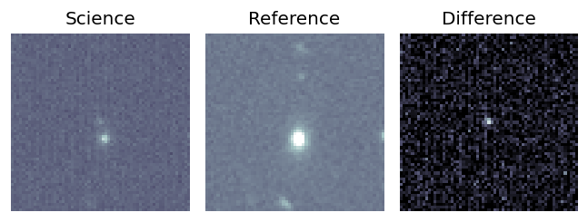
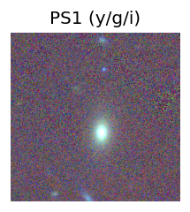
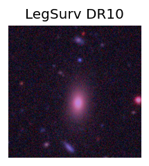
TESS: Sectors [ 3 30 97]
NED host (10 arcsec):Found WISEA J010354.99-104041.5 (G, 6.2″); NED spec-z: z=0.1491 [zflag SLS]; peak abs mag = -19.52
PS1: 0 sources in 3 arcsec
LegacySurvey: 1 sources in 3 arcsec Closest: d = 6.25 arcsec, 196.3 deg (east of north) photoz=0.14 (68% bounds 0.14, 0.15), type=SER peak abs mag (ext. corrected) = -19.45 (68% bounds -19.38, -19.49)
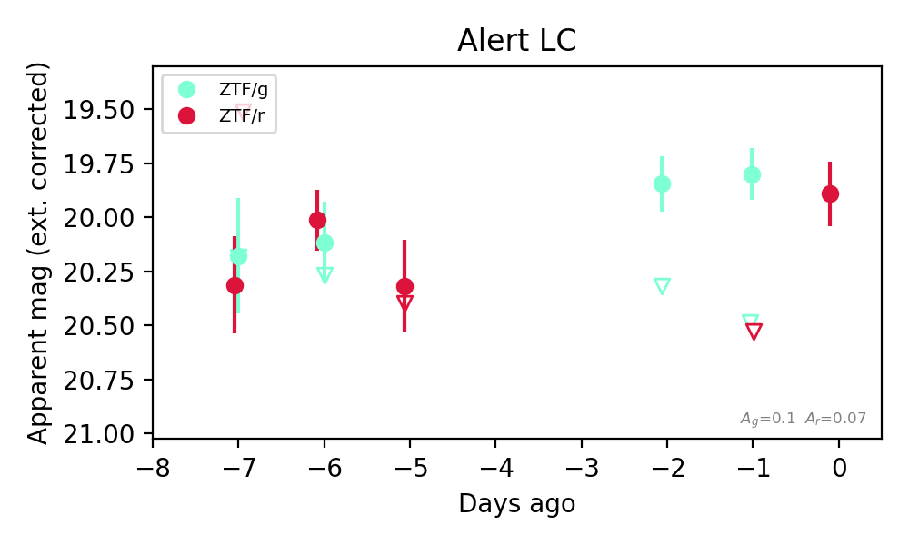
Extinction-corrected gr color:
From alerts: -0.73 +/- 99 mag
Rise Rate:
g: 34.88 mag/day
r: 0.71 mag/day
Fade Rate:
g: 0.63 mag/day
r: 0.38 mag/day
3. [ZTF] ZTF26abnslba (FBOT?) [Back to Top] [Share] [Trigger Swift] [Fritz Alert] [Fritz Source] [Lasair]RA, Dec: 38.69561, 37.51866 2h34m46.95s, 37d31m7.18sGalactic (l, b): 144.65596, -20.95512 ext(g-r) = 0.049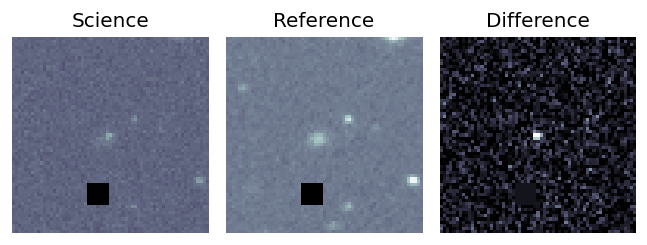
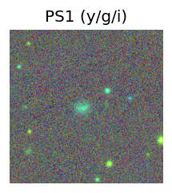

TESS: Sectors [18 58 85]
PS1: 1 source in 3 arcsec Closest: d = 0.96 arcsec photoz=0.22+/-0.16 peak abs mag = -21.48
LegacySurvey: 0 sources in 3 arcsec
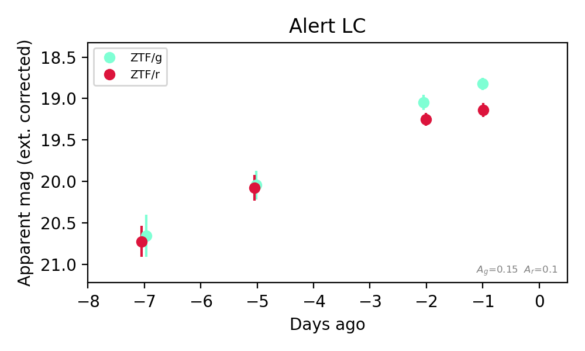
Extinction-corrected gr color:
From alerts: -0.32 +/- 0.11 mag
Rise Rate:
g: 0.31 mag/day
r: 0.26 mag/day
Fade Rate:
4. [ZTF] ZTF26abntgwh (FBOT?) [Back to Top] [Share] [Trigger Swift] [Fritz Alert] [Fritz Source] [Lasair]RA, Dec: 26.0981, 43.72583 1h44m23.54s, 43d43m32.98sGalactic (l, b): 132.95945, -18.11246 ext(g-r) = 0.084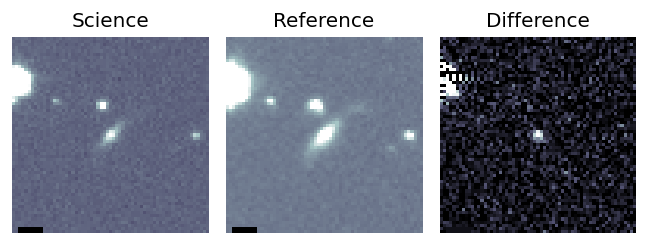
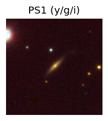

TESS: Sectors [18 58 85]
NED photo-z only: WISEA J014423.52+434333.0 (G, 0.2″) z=0.0744 [zflag PUN] — not used for peak abs mag
PS1: 1 source in 3 arcsec Closest: d = 0.18 arcsec photoz=0.10+/-0.01 peak abs mag = -19.86
LegacySurvey: 0 sources in 3 arcsec
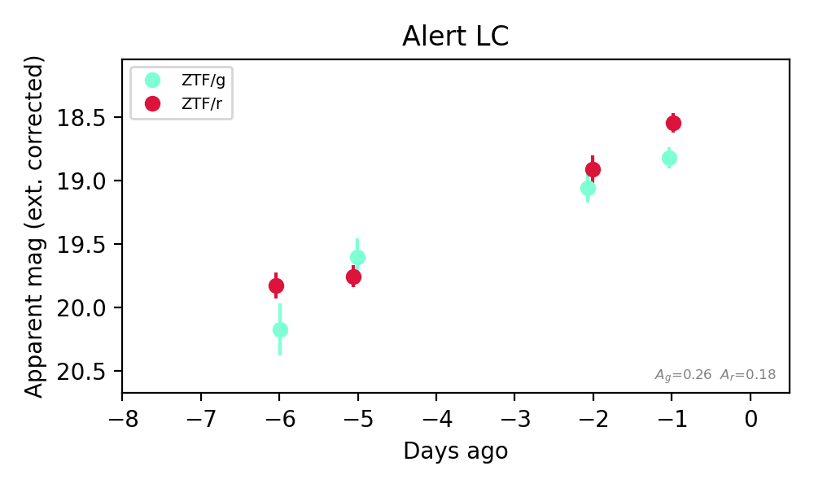
Extinction-corrected gr color:
From alerts: 0.28 +/- 0.11 mag
Consistent with synchrotron, g-r>0!
Rise Rate:
g: 0.23 mag/day
r: 0.27 mag/day
Fade Rate:
5. [ZTF] ZTF26aboicdm (FBOT?) [Back to Top] [Share] [Trigger Swift] [Fritz Alert] [Fritz Source] [Lasair]RA, Dec: 5.86595, 32.10716 0h23m27.83s, 32d 6m25.77sGalactic (l, b): 116.06496, -30.39132 ext(g-r) = 0.065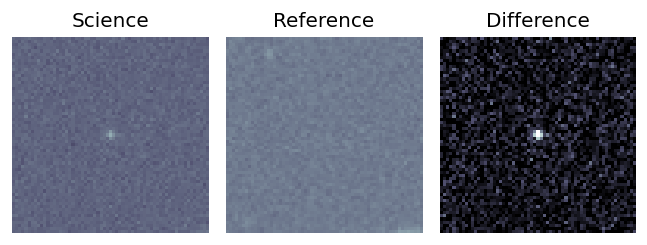
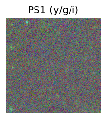
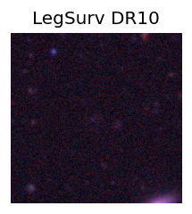
TESS: Sectors [17 57 84]
PS1: 0 sources in 3 arcsec
LegacySurvey: 1 sources in 3 arcsec Closest: d = 1.20 arcsec, 113.5 deg (east of north) photoz=1.02 (68% bounds 0.85, 1.2), type=REX peak abs mag (ext. corrected) = -24.56 (68% bounds -24.04, -24.98)
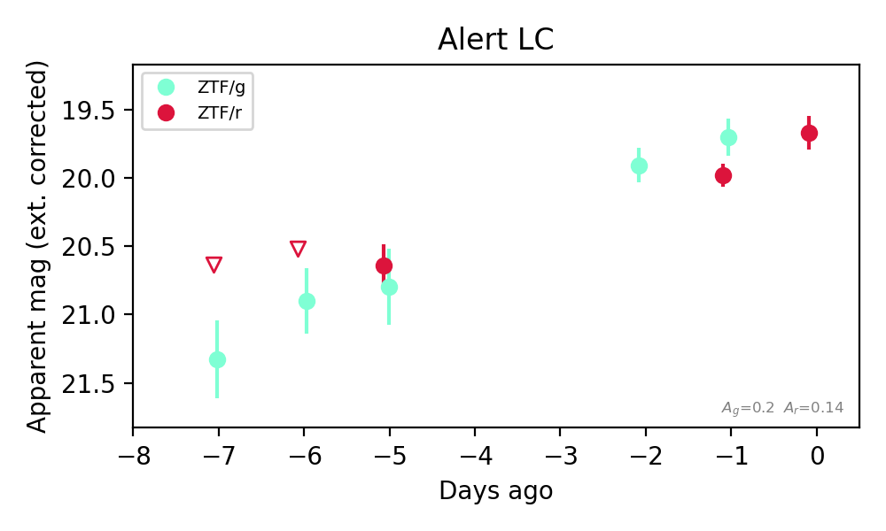
Extinction-corrected gr color:
From alerts: -0.28 +/- 0.16 mag
Rise Rate:
g: 0.27 mag/day
r: 0.19 mag/day
Fade Rate:
6. [ZTF] ZTF26abnozsn (Afterglow?) [Back to Top] [Share] [Trigger Swift] [Fritz Alert] [Fritz Source] [Lasair]RA, Dec: 330.39961, -0.84305 22h 1m35.91s, 0d-50m-34.98sGalactic (l, b): 58.5226, -41.54646 ext(g-r) = 0.08


TESS: Sectors [ 42 55 82 92 116]
NED host (10 arcsec):Found WISEA J220135.92-005035.1 (G, 0.3″); NED spec-z: z=0.1100 [zflag SLS]; peak abs mag = -19.39
PS1: 0 sources in 3 arcsec
LegacySurvey: 1 sources in 3 arcsec Closest: d = 0.32 arcsec, 141.1 deg (east of north) photoz=0.09 (68% bounds 0.08, 0.1), type=SER peak abs mag (ext. corrected) = -18.98 (68% bounds -18.56, -19.24)

Extinction-corrected gr color:
From alerts: -1.13 +/- 99 mag
Extinction-corrected gi color:
From alerts: -0.68 +/- 99 mag
Extinction-corrected ri color:
From alerts: -0.43 +/- 99 mag
Rise Rate:
g: 0.17 mag/day
r: 1.2 mag/day
Fade Rate:
r: 1.04 mag/day
7. [ZTF] ZTF26abohdvv (FBOT?) [Back to Top] [Share] [Trigger Swift] [Fritz Alert] [Fritz Source] [Lasair]RA, Dec: 324.13425, -0.34617 21h36m32.22s, 0d-20m-46.23sGalactic (l, b): 54.39078, -36.1459 ext(g-r) = 0.054


TESS: Sectors [55 82]
SDSS (<15 kpc):Found SDSS phot-z: z=0.25; peak abs mag = -21.44
PS1: 0 sources in 3 arcsec
LegacySurvey: 1 sources in 3 arcsec Closest: d = 0.46 arcsec, 236.9 deg (east of north) photoz=0.1 (68% bounds 0.07, 0.12), type=SER peak abs mag (ext. corrected) = -19.38 (68% bounds -18.53, -19.68)

Extinction-corrected gr color:
From alerts: -0.25 +/- 0.18 mag
Extinction-corrected gi color:
From alerts: -0.46 +/- 0.17 mag
Extinction-corrected ri color:
From alerts: -0.21 +/- 0.16 mag
Rise Rate:
g: 0.28 mag/day
r: 0.33 mag/day
i: 0.63 mag/day
Fade Rate:
8. [ZTF] ZTF26abohnal (FBOT?) [Back to Top] [Share] [Trigger Swift] [Fritz Alert] [Fritz Source] [Lasair]RA, Dec: 324.16608, 0.11457 21h36m39.86s, 0d 6m52.46sGalactic (l, b): 54.88401, -35.91311 ext(g-r) = 0.066


TESS: Sectors [55 82]
SDSS (<15 kpc):Found SDSS phot-z: z=0.20; peak abs mag = -20.28
PS1: 0 sources in 3 arcsec
LegacySurvey: 1 sources in 3 arcsec Closest: d = 0.89 arcsec, 268.3 deg (east of north) photoz=0.75 (68% bounds 0.32, 1.99), type=REX peak abs mag (ext. corrected) = -23.72 (68% bounds -21.5, -26.31)

Extinction-corrected gr color:
From alerts: -0.21 +/- 0.25 mag
Extinction-corrected gi color:
From alerts: -0.61 +/- 0.27 mag
Extinction-corrected ri color:
From alerts: -0.23 +/- 0.27 mag
Consistent with synchrotron, g-r>0!
Rise Rate:
g: 0.29 mag/day
r: 0.11 mag/day
Fade Rate:
9. [ZTF] ZTF26abohzjc (FBOT?) [Back to Top] [Share] [Trigger Swift] [Fritz Alert] [Fritz Source] [Lasair]RA, Dec: 1.80068, 3.07907 0h 7m12.16s, 3d 4m44.67sGalactic (l, b): 101.76541, -57.96325 WARNING: 2.11 deg from ecliptic plane ext(g-r) = 0.023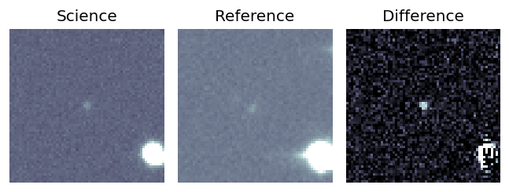
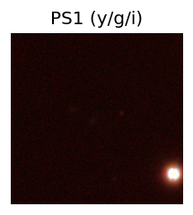
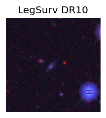
TESS: Sectors [42 70]
SDSS (<15 kpc):Found SDSS phot-z: z=0.12; peak abs mag = -18.94
PS1: 0 sources in 3 arcsec
LegacySurvey: 1 sources in 3 arcsec Closest: d = 1.48 arcsec, 343.8 deg (east of north) photoz=0.3 (68% bounds 0.11, 0.67), type=EXP peak abs mag (ext. corrected) = -21.22 (68% bounds -18.87, -23.26)
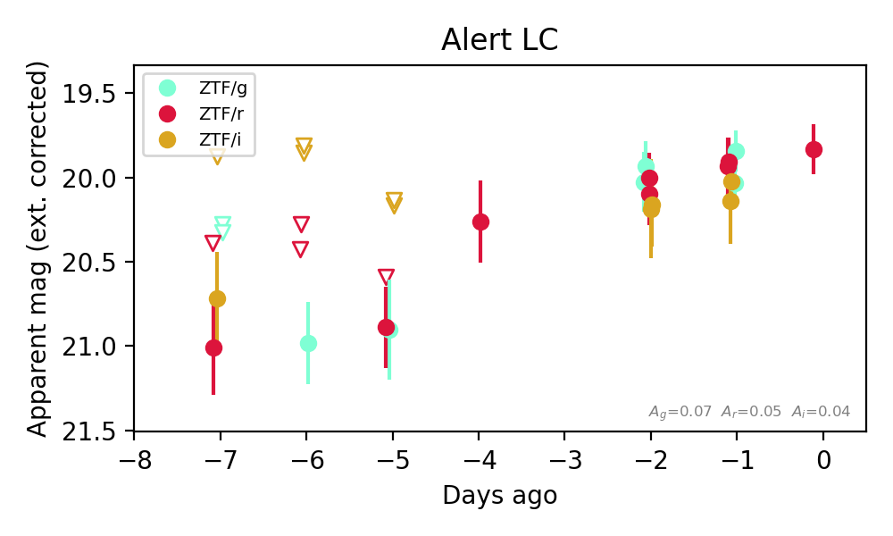
Extinction-corrected gr color:
From alerts: 0.01 +/- 0.14 mag
Extinction-corrected gi color:
From alerts: -0.13 +/- 0.17 mag
Extinction-corrected ri color:
From alerts: -0.14 +/- 0.18 mag
Consistent with synchrotron, g-r>0!
Rise Rate:
g: 0.22 mag/day
r: 0.18 mag/day
i: 0.11 mag/day
Fade Rate:
10. [ZTF] ZTF26abodqhq (Afterglow?) [Back to Top] [Share] [Trigger Swift] [Fritz Alert] [Fritz Source] [Lasair]RA, Dec: 217.16133, -3.32968 14h28m38.72s, -3d-19m-46.84sGalactic (l, b): 344.29827, 51.56122 ext(g-r) = 0.099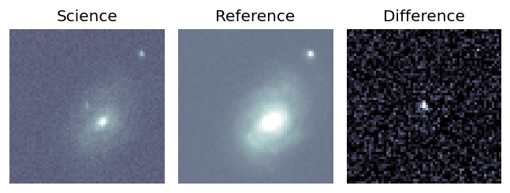
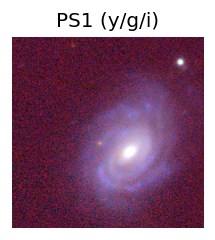
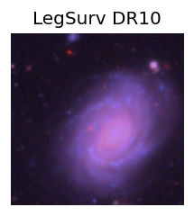
TESS: Sectors [ 51 91 115]
SDSS (<15 kpc):Found SDSS phot-z: z=0.02; peak abs mag = -16.18
NED host (10 arcsec):Found CGCG 019-040 (G, 9.1″); NED spec-z: z=0.0305 [zflag SUN]; peak abs mag = -16.93
PS1: 0 sources in 3 arcsec
LegacySurvey: 1 sources in 3 arcsec Closest: d = 4.66 arcsec, 143.9 deg (east of north) photoz=0.19 (68% bounds 0.15, 0.27), type=SER peak abs mag (ext. corrected) = -21.15 (68% bounds -20.49, -21.95)
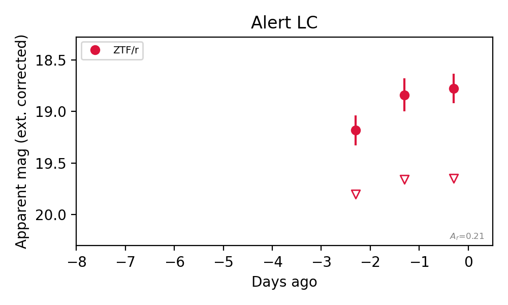
Rise Rate:
r: 0.97 mag/day
Fade Rate:
r: 0.82 mag/day
11. [ZTF] ZTF26abooilb (Afterglow?) [Back to Top] [Share] [Trigger Swift] [Fritz Alert] [Fritz Source] [Lasair]RA, Dec: 321.44705, 5.65478 21h25m47.29s, 5d39m17.22sGalactic (l, b): 58.41367, -30.495 ext(g-r) = 0.09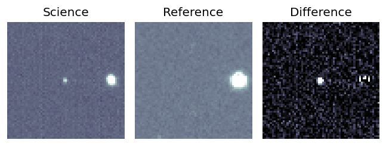
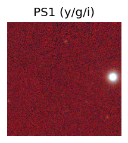
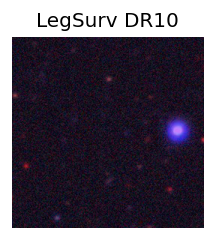
TESS: Sectors 82
PS1: 0 sources in 3 arcsec
LegacySurvey: 1 sources in 3 arcsec Closest: d = 6.52 arcsec, 266.1 deg (east of north) photoz=1.07 (68% bounds 0.56, 1.38), type=PSF peak abs mag (ext. corrected) = -27.46 (68% bounds -25.73, -28.13)
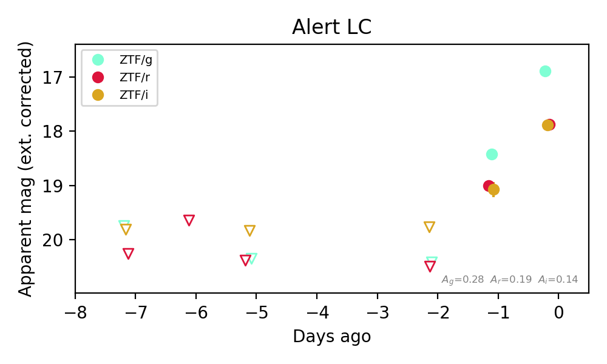
Extinction-corrected gr color:
From alerts: -0.98 +/- 0.07 mag
Extinction-corrected gi color:
From alerts: -0.99 +/- 0.08 mag
Extinction-corrected ri color:
From alerts: -0.01 +/- 0.07 mag
Consistent with synchrotron, g-r>0!
Rise Rate:
g: 2.0 mag/day
r: 1.53 mag/day
i: 1.34 mag/day
Fade Rate:
12. [ZTF] ZTF26abovbpl (Afterglow?) [Back to Top] [Share] [Trigger Swift] [Fritz Alert] [Fritz Source] [Lasair]RA, Dec: 54.81094, 25.30913 3h39m14.63s, 25d18m32.88sGalactic (l, b): 164.26739, -23.79265 ext(g-r) = 0.231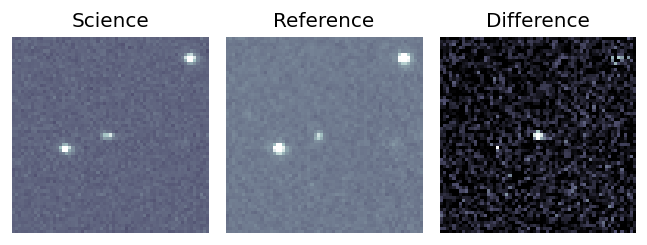
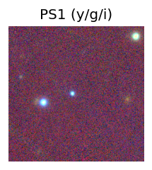

TESS: Sectors [42 43 44 70 71]
PS1: 1 source in 3 arcsec Closest: d = 2.08 arcsec photoz=0.84+/-0.30 peak abs mag = -24.73
LegacySurvey: 0 sources in 3 arcsec
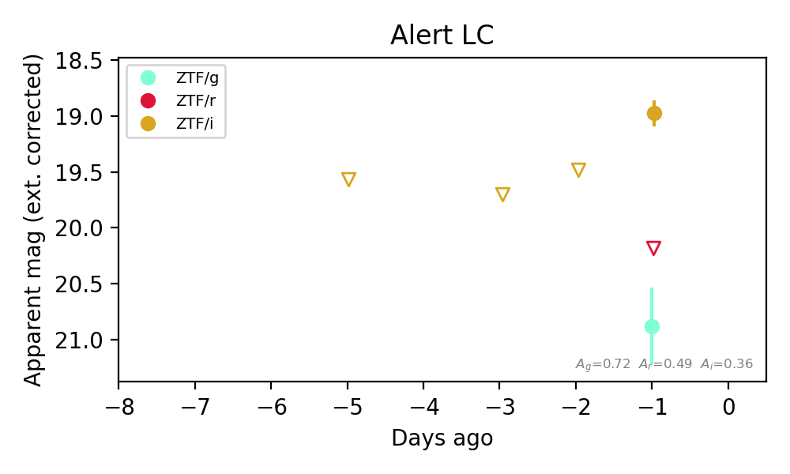
Extinction-corrected gr color:
From alerts: 0.7 +/- 99 mag
Extinction-corrected gi color:
From alerts: 1.9 +/- 0.36 mag
Extinction-corrected ri color:
From alerts: 1.2 +/- 99 mag
Consistent with synchrotron, g-r>0!
Rise Rate:
i: 0.51 mag/day
Fade Rate:
13. [ZTF] ZTF26abovgby (FBOT?) [Back to Top] [Share] [Trigger Swift] [Fritz Alert] [Fritz Source] [Lasair]RA, Dec: 190.33092, 16.58641 12h41m19.42s, 16d35m11.09sGalactic (l, b): 289.88972, 79.20118 ext(g-r) = 0.025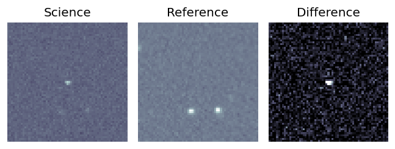
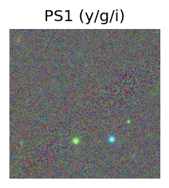
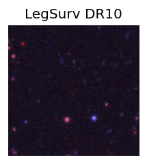
TESS: Sectors [23 49]
PS1: 0 sources in 3 arcsec
LegacySurvey: 1 sources in 3 arcsec Closest: d = 0.73 arcsec, 286.0 deg (east of north) photoz=0.99 (68% bounds 0.7, 1.26), type=PSF peak abs mag (ext. corrected) = -25.8 (68% bounds -24.84, -26.44)
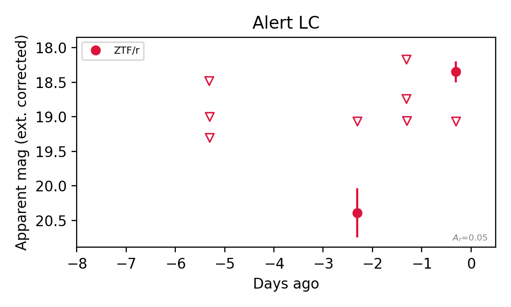
Rise Rate:
r: 1.02 mag/day
Fade Rate:
14. [ZTF] ZTF26abovveq (FBOT?) [Back to Top] [Share] [Trigger Swift] [Fritz Alert] [Fritz Source] [Lasair]RA, Dec: 278.89258, 39.95695 18h35m34.22s, 39d57m25.02sGalactic (l, b): 68.52776, 19.87888 ext(g-r) = 0.072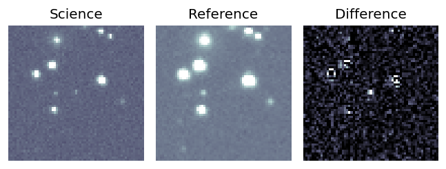
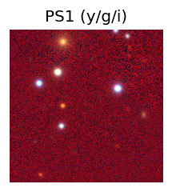
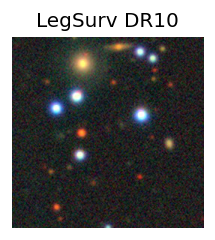
TESS: Sectors [ 14 26 40 53 54 74 80 81 118 119]
PS1: 0 sources in 3 arcsec
LegacySurvey: 1 sources in 3 arcsec Closest: d = 1.28 arcsec, 0.7 deg (east of north) photoz=0.84 (68% bounds 0.51, 1.02), type=REX peak abs mag (ext. corrected) = -23.24 (68% bounds -21.95, -23.76)
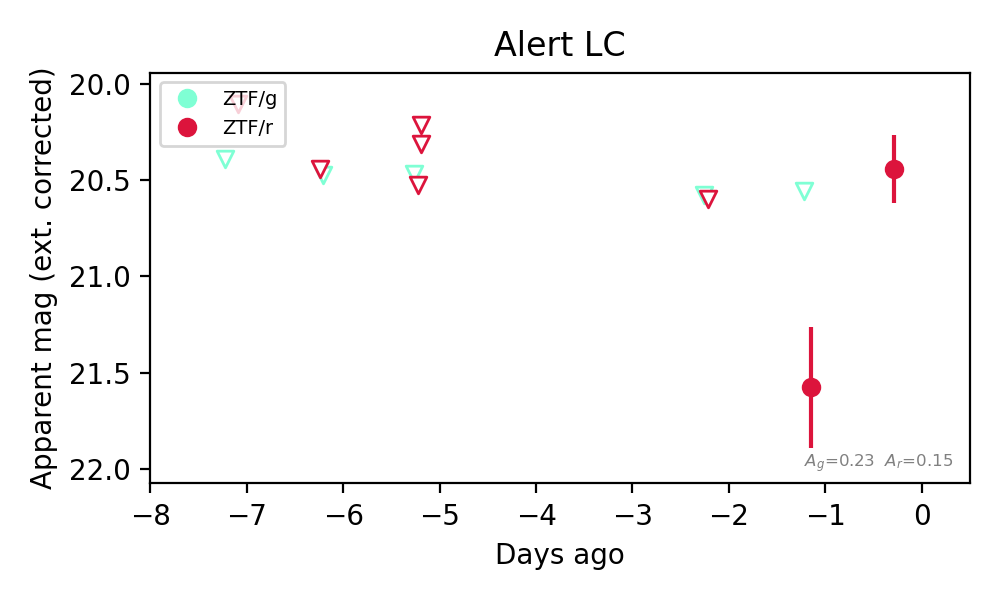
Extinction-corrected gr color:
From alerts: -1.02 +/- 99 mag
Rise Rate:
r: 1.31 mag/day
Fade Rate:
15. [ZTF] ZTF26abowocu (FBOT?) [Back to Top] [Share] [Trigger Swift] [Fritz Alert] [Fritz Source] [Lasair]RA, Dec: 291.71066, 53.92274 19h26m50.56s, 53d55m21.86sGalactic (l, b): 85.51669, 16.73201 ext(g-r) = 0.192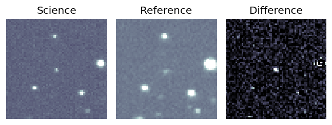
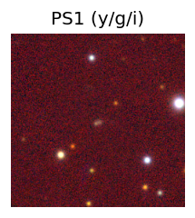
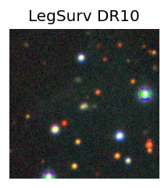
TESS: Sectors [ 14 15 16 40 41 53 54 55 56 60 74 75 76 80 81 82 83 119
120 121]
PS1: 0 sources in 3 arcsec
LegacySurvey: 1 sources in 3 arcsec Closest: d = 1.18 arcsec, 201.1 deg (east of north) photoz=0.35 (68% bounds 0.09, 0.51), type=EXP peak abs mag (ext. corrected) = -21.98 (68% bounds -18.74, -22.97)
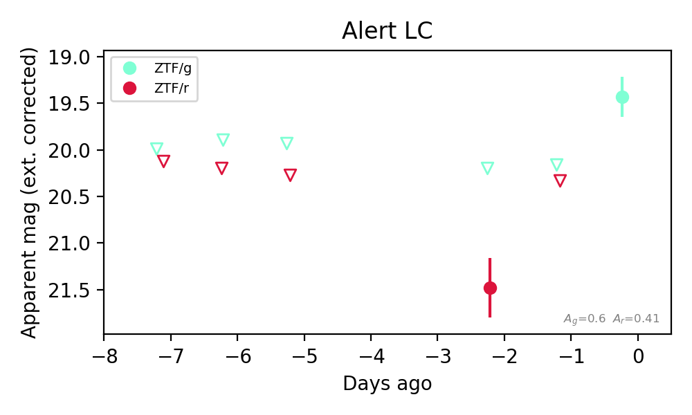
Extinction-corrected gr color:
From alerts: -1.28 +/- 99 mag
Rise Rate:
g: 0.74 mag/day
Fade Rate: